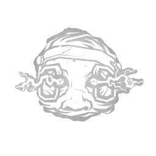
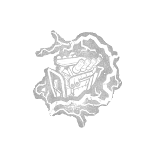
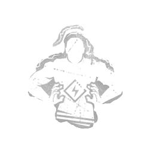

医生 Doctor
- 难度
- 3
- 移速
- 4.6
- 恐惧范围
- 32 米
- 能力
- 卡特的天赋
- 性别
- Man
- 出身
- African American
- 演员
- Alex Lin (BHVR)
背景故事
原始背景故事[编辑]
赫尔曼·卡特从很小的时候起，就懂透了人类的心理。要剖析并解构大脑这样强大的存在，令他着了迷。他是个出类拔萃的学生，很快便得到了老师的赏识。他在高中时期成绩优异，文章还被刊登在一本名为《Partisan》的心理学刊物上。不到一年，卡特就被破格录取进入耶鲁大学的advanced神经科学项目——说到底，那不过是中央情报局的一个幌子。如果你打算征服世界、碾灭大洋彼岸的敌人，头脑就是硬道理。中情局深谙此理，于是审讯与情报工作成了他们的第一要务。他们所需要的，只是天才——比如卡特。
卡特与其他顶尖招募对象被带离校园，送进伊利诺伊州一座名为「莱里纪念研究所」的机密黑站点设施。一位门生需要导师，而奥托·斯坦珀博士正是在那里登场，他教给卡特：信息就是一切，知识就是力量。他得到了所有所需的器械、一只引路的手，以及几乎所有他开口索要的东西。他从未意识到，阳光已经开始变得如此稀缺，他自己也被蒙在黑暗之中。因为知识赋予你的不只是力量，它还会把你变成一个威胁。
提取情报就是他的使命。斯坦珀博士鼓励卡特更进一步，不要把这当成一座普通的医疗设施——没有人在监视他们，也没有任何规矩需要遵守。该机构只是给卡特指明了方向，接着他便开始动手了——
专属技能

监控与滥用
Monitor & Abuse

过载
Overcharge

压倒性气场
Overwhelming Presence
通用技能 任意杀手均可使用
苦涩低语
Bitter Murmur
淘汰弱者
Cull the Weak
捕鹿人
Deerstalker
煎熬
Distressing
咒术：命运愚者
Hex: Fortune's Fool
咒术：无人幸免于死
Hex: No One Escapes Death
咒术：狩猎快感
Hex: Thrill of the Hunt
黑暗中
In the Dark
隐秘
Insidious
铁掌
Iron Grasp
让他们等着
Keep Them Waiting
毫无保留
No Holds Barred
血狱钩：怪诞圣地
Scourge Hook: Monstrous Shrine
血狱钩：泣血之伤
Scourge Hook: Weeping Wounds
看他们逃窜
See How They Run
破碎希望
Shattered Hope
邋遢屠夫
Sloppy Butcher
暗影间谍
Spies from the Shadows
表现失常
Underperform
不依不饶
Unrelenting
耳语
Whispers
附加品
- 传说 “冷静”·卡特笔记 "Calm" - Carter's Notes
- 稀有 “冷静”·一级 "Calm" - Class I
- 罕见 “冷静”·二级 "Calm" - Class II
- 传说 “自律”·卡特笔记 "Discipline" - Carter's Notes
- 罕见 “自律”·二级 "Discipline" - Class II
- 精贵 “自律”·三级 "Discipline" - Class III
- 罕见 “服从”·三级 "Obedience" - Class III
- 传说 “秩序”·卡特笔记 "Order" - Carter's Notes
- 稀有 “秩序”·一级 "Order" - Class I
- 罕见 “秩序”·二级 "Order" - Class II
- 传说 “克制”·卡特笔记 "Restraint" - Carter's Notes
- 罕见 “克制”·二级 "Restraint" - Class II
- 精贵 “克制”·三级 "Restraint" - Class III
- 精贵 高刺激电极 High Stimulus Electrode
- 精贵 访谈录音带 Interview Tape
- 活动 虹彩王 Iridescent King
- 活动 虹彩后 Iridescent Queen
- 稀有 枫木骑士 Maple Knight
- 稀有 发霉电极 Mouldy Electrode
- 罕见 抛光电极 Polished Electrode
- 精贵 废弃录音带 Scrapped Tape